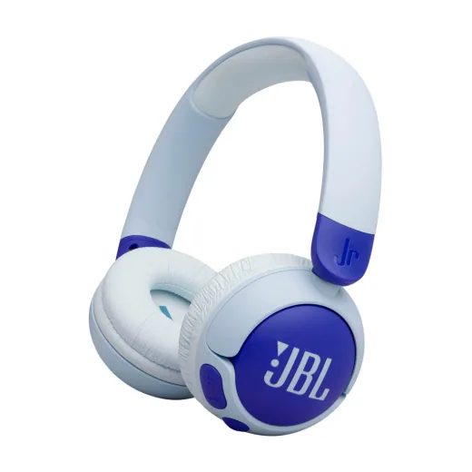
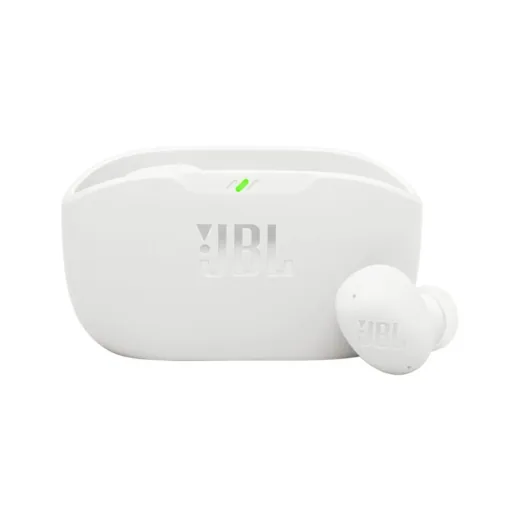
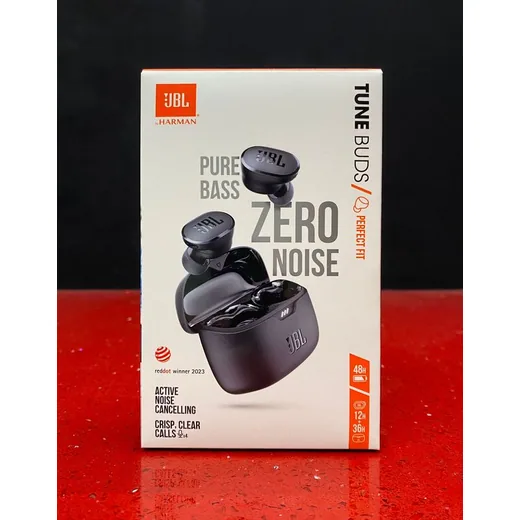
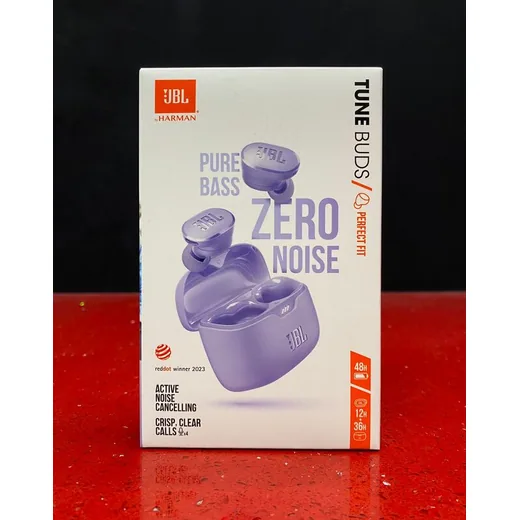
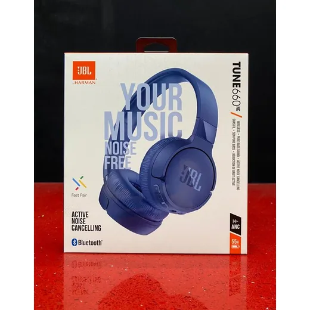
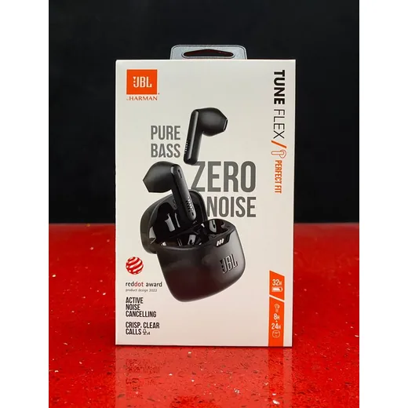
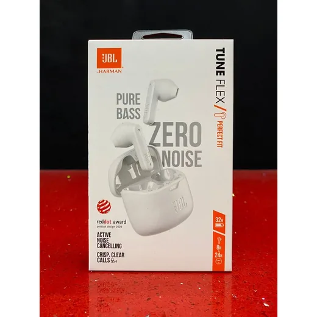
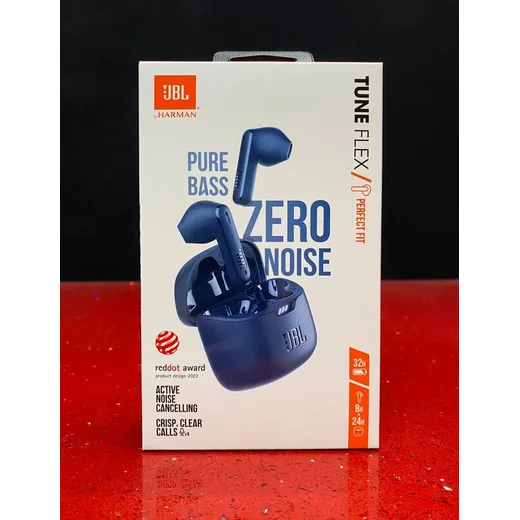
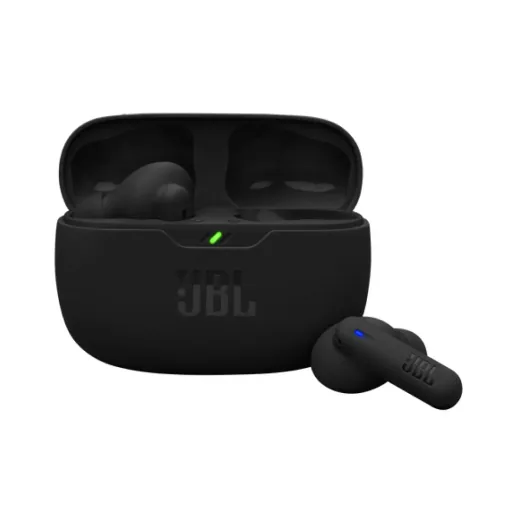

JBL · Modelo JR320
Audífono JBL JR320 Wireless Blanco con Bluetooth 5.3 y 50h de batería
L 1,495
En Lady Lee
Precio en cada tienda
| Tienda | Precio | Antes | Disponibilidad | |
|---|---|---|---|---|
| Lady Lee | L 1,495 | Disponible | Ver en tienda › |
Precios referenciales tomados de cada tienda el 28 de noviembre de 2026. El precio válido es el que muestra la tienda al comprar.
Historial de precio
Lo seguimos desde el 1 de noviembre. Precio más bajo registrado: L 1,495 en Lady Lee (1 de noviembre), igual que hoy. El precio no ha cambiado en ese tiempo.
Características
| Modelo | JBLJR320BTBLUAM |
|---|---|
| Color | Blanco |
| Tipo | On-ear, inalámbrico |
| Bluetooth | Versión 5.3 |
| Perfiles | A2DP, AVRCP |
| Micrófono | 1 integrado |
| Sensibilidad | 80 dB SPL @1kHz |
| Respuesta de frecuencia | 20 Hz - 20 kHz |
| Impedancia | 32 ohm |
| Batería | Li-ion 500 mAh / 3.7V |
| Duración | Hasta 50 horas música / 29 |
Descripción
JBL JR320 Wireless ofrece comodidad, sonido JBL Pure Bass y conectividad avanzada. Diseñado para uso prolongado con batería de larga duración y funciones inteligentes.
• Diseño plegable y ligero: ideal para llevar a todas partes.
• Sonido JBL Pure Bass: audio claro y equilibrado.
• Bluetooth 5.3: conexión rápida y estable.
• Batería de hasta 50 horas: disfruta música sin interrupciones.
• Carga rápida: menos de 2 horas para carga completa.
• Micrófono integrado: llamadas claras y control por voz.
• App JBL Headphones: personaliza tu experiencia auditiva.
Otros audífonos JBL

Audifonos JBL Vibe Buds2/BlancoL 1,490En Diunsa
Audifono Inalambrico Bluetooth Tune BUDS Negro JBLL 1,490En Game Station
Audifono Inalambrico Bluetooth Tune BUDS Lila JBLL 1,450En Game Station
Auricular Inalambrico Bluetooth Tune660NC Azul JBLL 1,450En Game Station
Audifono Inalambrico Bluetooth Tune FLEX Negro JBLL 1,590En Game Station
Audifono Inalambrico Bluetooth Tune FLEX Blanco JBLL 1,590En Game Station
Audifono Inalambrico Bluetooth Tune FLEX Azul JBLL 1,590En Game Station
Audífonos In-ear JBL Vibe Beam 2 True Wireless Negro · JBLVBEAM2BLKAML 1,595En Lady Lee